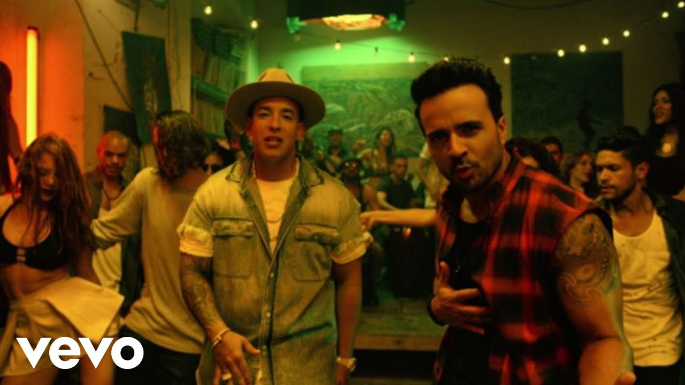

"Bohemian Rhapsody" is arguably one of the greatest rock songs of all time. Released in 1975 by the iconic band Queen, the song combines elements of rock, opera, and ballad. Written by lead vocalist Freddie Mercury, "Bohemian Rhapsody" defies conventional song structures, and its unique blend of genres helped define Queen’s legacy as one of the most innovative bands in rock history. The track has stood the test of time, continuously being recognized in “best of” lists and enjoyed by fans across generations.
"So What" is a jazz masterpiece by Miles Davis, featured on his seminal album *Kind of Blue* (1959). This track epitomizes the modal jazz style Davis pioneered, using scales rather than traditional chord changes to create a more open and free-flowing structure. With its subtle complexities, "So What" has become one of the most influential jazz compositions, influencing generations of musicians across genres.
Featured Hip-Hop Song: "Sicko Mode" by Travis Scott
"Sicko Mode" is a groundbreaking hip-hop track by Travis Scott, known for its unpredictable structure and use of multiple beats and melodies. Released in 2018, this song showcases Scott's innovative style, blending trap beats with psychedelic influences. Its complex production, combined with contributions from other artists like Drake, made it a defining song of the decade.
"Strobe" by Deadmau5 is one of the most iconic tracks in the electronic dance music (EDM) scene. Released in 2009, this progressive house anthem has captivated listeners with its epic build-up and ethereal drop. It is known for its emotional, cinematic feel, making it a favorite among EDM fans worldwide.
Featured Reggae Song: "No Woman, No Cry" by Bob Marley
"No Woman, No Cry" is one of Bob Marley's most beloved reggae songs. Originally released in 1974, this track became a global anthem, symbolizing hope and resilience. Marley's powerful lyrics and soulful voice resonate deeply with listeners, and the song remains a timeless classic in reggae music.
Featured Classical Song: "Clair de Lune" by Claude Debussy
"Clair de Lune" is one of Claude Debussy's most famous compositions, widely regarded as a masterpiece of impressionist music. Its serene, flowing melodies and ethereal atmosphere have made it a favorite among classical music enthusiasts. Composed in 1890 and later revised, it remains a staple of the piano repertoire.
"Jolene" by Dolly Parton is an iconic country ballad released in 1973. The song tells the story of a woman pleading with another to not take away her man. Known for its haunting melody and poignant lyrics, "Jolene" has become one of country music's most enduring songs, covered by many artists in various genres.
Featured Blues Song: "The Thrill Is Gone" by B.B. King
"The Thrill Is Gone" is a classic blues song by the legendary B.B. King. Released in 1969, this track blends soulful guitar playing with King’s heartfelt vocal delivery, capturing the pain of lost love. It became one of his most famous songs, solidifying his status as a pioneer of modern blues.
Featured Soul Song: "What's Going On" by Marvin Gaye
"What's Going On" by Marvin Gaye is an influential soul track that addresses social and political issues, including war, poverty, and inequality. Released in 1971, the song remains relevant today due to its powerful message and Gaye’s impassioned performance. It is considered one of the greatest songs of all time.
Featured Latin Song: "Despacito" by Luis Fonsi ft. Daddy Yankee

"Despacito" is a reggaeton and Latin pop song by Puerto Rican singer Luis Fonsi featuring Daddy Yankee. Released in 2017, the song became a global hit, breaking streaming records and topping charts worldwide. Its catchy rhythm, infectious melody, and memorable lyrics helped bring Latin music into the global mainstream.